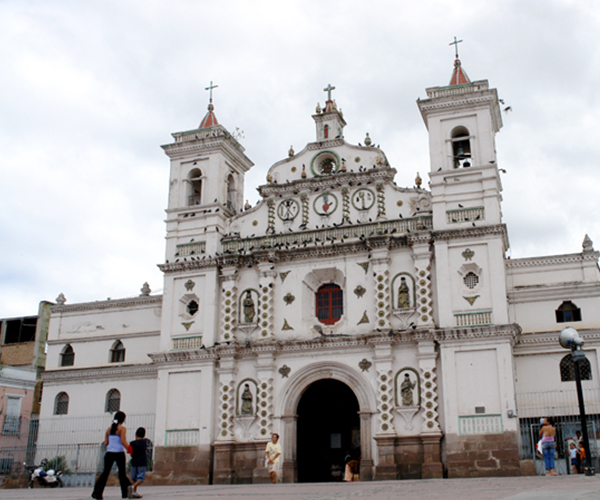

Don’t know what to do? Here the best museums, parks, churches and locals you should visit.
Where
Revive the history of Tegucigalpa
Iglesia de Santa María de los Dolores(1) A site you deffinetly must go on downtown Tegucigalpa, this colonial church is beautifull outside and even inside. The Church of Santa María de Los Dolores in the city of Tegucigalpa is one of the oldest in the country and is dedicated to the virgin Santa María. The first works of the work of the present church began in 1732 and the building took about 80 years to complete and being inaugurated on the 17th of March 1815.

St. Michael the Archangel Cathedral, Tegucigalpa(2) or in Spanish: Catedral Metropolitana de San Míguel Arcángel. It is a Catholic church in Tegucigalpa, Honduras. In 1746, a fire consumed the temple dedicated to the town of Tegucigalpa, later destroyed and rebuild.
Parque Central Tegucigalpa(3) Parque Central, also known as Plaza Morazan, is a nice place to stop by. Sitting on a bench, you can observe the local people and their behavior, the little vendors and the nearby attractions such as Cathedral San Michael and the remarkable monument of General Francisco Morazán on horseback.
Monumento a la Paz - Cerro Juana Lainez(4) This monument, inside Tegucigalpa's largest park, was erected in 1996 in the name of eternal peace between the 'fraternal nations of Central America.'
Explore the natural beauty of Tegucigalpa
Naciones Unidas El Picacho Park(5) This small hilltop park 6km from downtown has busy walking trails, but the main reason to visit is to stand at the feet of the approximately 20m high El Cristo del Picacho (entry L10) that you may have seen lit up, hovering high above the city at night. There are sweeping views over the city from up here.
La Tigra National Park(6) La Tigra National Park (Spanish: Parque Nacional La Tigra) was the first national park in Honduras whose principal objective is "The Conservation, Ecologic Preservation and Maintenance of The Hydrologic Potential of this Reserve". It was established on 1 January 1980 and covers an area of 238.21 square kilometers. It has an altitude of between 1,800 and 2,185 metres.
Family activities in Tegucigalpa
Centro Interactivo de Enseñanza CHIMINIKE(7) This museum is great for children and even adults. There are a lot of different exhibits that are very interactive and educational and it also includes exhibits that proudly display and educate about Honduran Culture, History and Geography.
Museo Para La Identidad Nacional(8) The Honduran Museum for National Identity is a museum devoted to the acquisition, investigation, conservation and dissemination of historical material relating to the human population of the territory of Honduras. Built in the 19th century is one of the city's most visited museums.
UNAH Center for Art and Culture(9) The UNAH Center for Art and Culture (CAC), is a space of permanent dialogue between the Autonomous National University of Honduras (UNAH) and the community of Comayagüela, Honduras, which promotes the spreading of humanistic, artistic and scientific knowledge. The building was built in the 1940s as the Hotel Panamericano, being Abandoned and restored this building has a long history behind.
Nightlife and Free time in Tegucigalpa
The City mall(10) Really embodies the northern style of shopping malls without making it claustrophobic. Plenty of stores to choose from and variety of then as well. From clothing to an intercity bus line, all in one place. Just half a mile from the airport terminal makes it ideal for a quick getaway if you have a long wait between flights.
Mall Multiplaza(11) This Mall is a nice place to visit if you want to get some exercise in while visiting Tegucigalpa and do some shopping at the same time. You can even have a drink or make friends at the various bars.